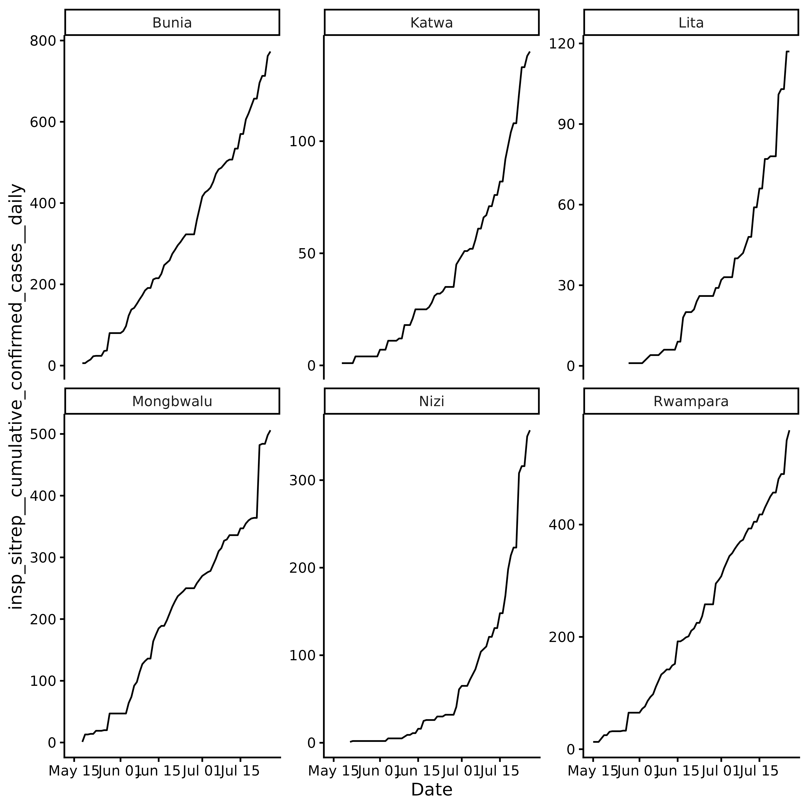
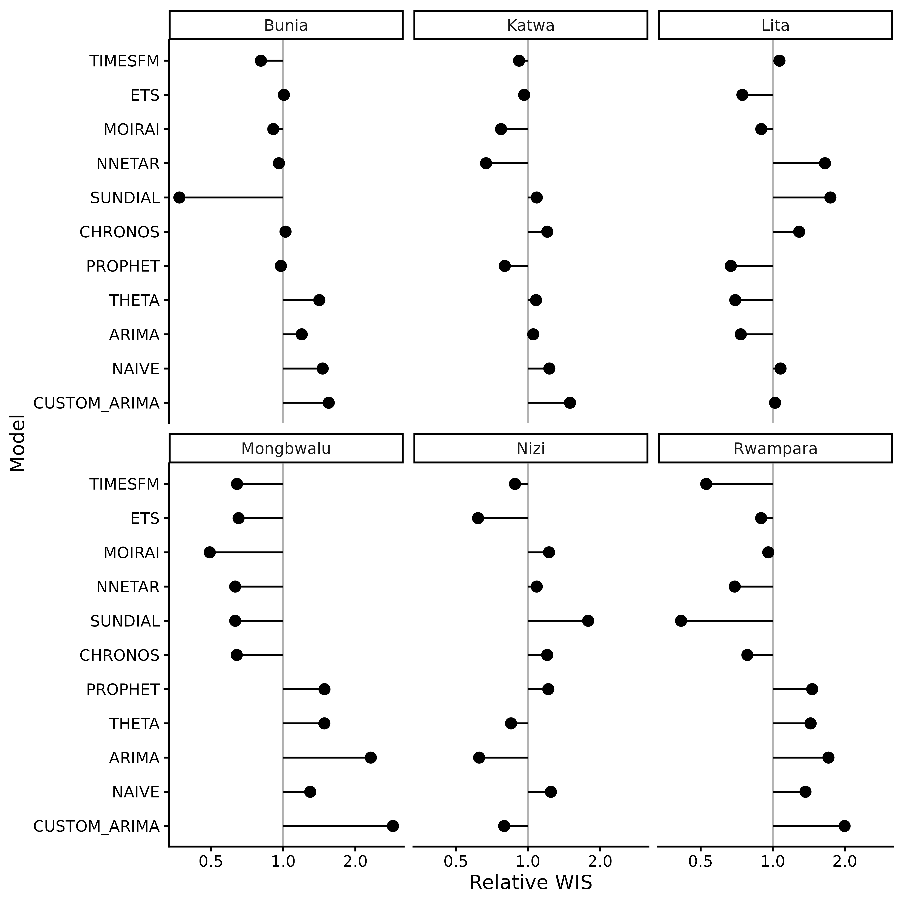
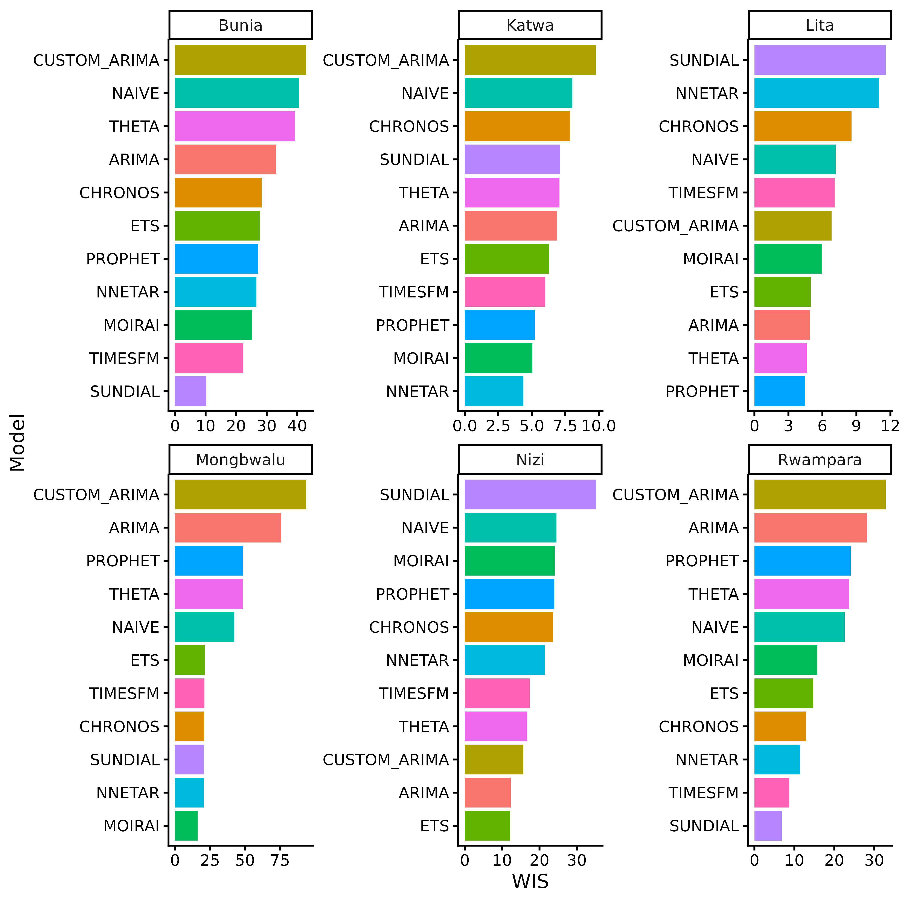
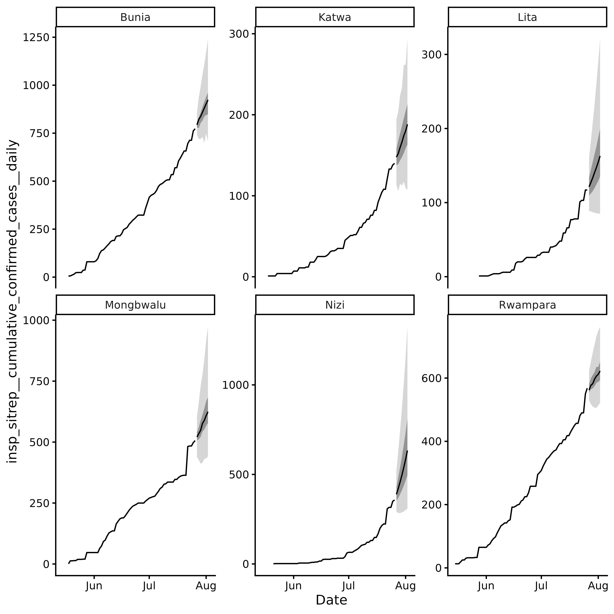
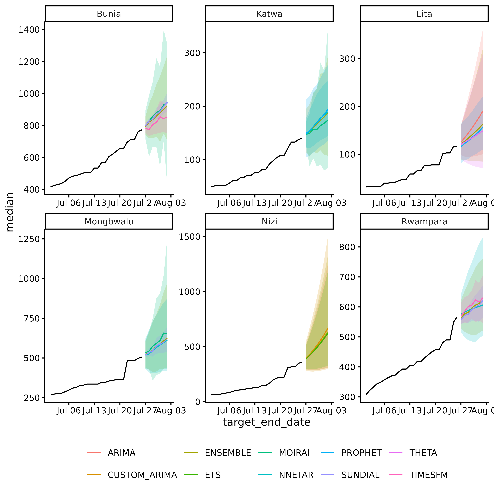

Overview
In May 2026, the Democratic Republic of the Congo (DRC) reported an
Ebola outbreak caused by the Bundibugyo strain, five months after the
previous epidemic. By July 2026, 2,423 cases and 967 deaths had been
reported. Rapid forecasting is critical for guiding public health
response and resource allocation. This vignette demonstrates how to use
incast to forecast Ebola incidence using surveillance data
from the Institut
National de Recherche Biomédicale (INRB).
The vignette is not executed because the models are computationally expensive. Running the code locally may take several minutes.
Data
We model the six locations with the highest cumulative confirmed cases. For each location, we create a daily time series up to the latest reporting date, filling missing days by carrying forward cumulative counts and removing downward corrections. Leading zeros before the first reported case are removed because the models use log-transformed incidence; locations with later introductions therefore have shorter time series.
library(dplyr)
library(tidyr)
library(ggplot2)
ebola <- read.csv(
"https://raw.githubusercontent.com/scc-usc/ebola2026/refs/heads/main/hubverse_observed_data.csv"
) |>
filter(
target == "insp_sitrep__cumulative_confirmed_cases__daily",
!is.na(location)
) |>
mutate(target_end_date = as.Date(target_end_date))
top_locations <- ebola |>
slice_max(target_end_date, by = location) |>
slice_max(observation, n = 6) |>
pull(location)
ebola <- ebola |>
filter(location %in% top_locations) |>
arrange(location, target_end_date) |>
group_by(location) |>
complete(
target_end_date = seq(
min(target_end_date),
max(target_end_date),
by = "day"
)
) |>
fill(observation, .direction = "down") |> # carry cumulative over gaps
mutate(observation = cummax(coalesce(observation, 0))) |> # monotonic, per location
filter(cumsum(observation > 0) > 0) |> # drop pre-first-case zeros; log() needs > 0
ungroup() |>
mutate(target = "insp_sitrep__cumulative_confirmed_cases__daily")
incast Workflow
Data Validation
check_data() validates the Ebola data and returns an
incast_data object. The function checks for missing values,
ensures that the data is in the correct format, and verifies that the
necessary columns are present.
library(incast)
data <- ebola |> check_data()
data
#> <incast_data>
#> Target: insp_sitrep__cumulative_confirmed_cases__daily
#> Series: 6 (location)
#> Window: 2026-05-15 to 2026-07-26 (1-day interval)
data |> autoplot()
Revised history of cumulative confirmed cases is not available for
this outbreak, so we will skip get_ncast() and proceed
directly to cross-validation and forecasting.
Cross Validation
get_cv() performs rolling-origin time series
cross-validation and returns an incast_cv object containing
the results for each model and location.
First we define a list of models to test. We will use the default
models provided by incast from fable and add
some custom models, including ARIMA, a neural network, and several
foundation models.
library(fable)
library(fable.prophet)
models <- c(
default_models(),
list(
CUSTOM_ARIMA = ARIMA(log(observation) ~ pdq(1, 1, 0)),
NNETAR = NNETAR(log(observation), n_networks = 10),
PROPHET = prophet(log(observation)),
# you will need a python environment (see reticulate)
CHRONOS = FOUNDATION(log(observation), "chronos"),
TIMESFM = FOUNDATION(log(observation), "timesfm"),
SUNDIAL = FOUNDATION(log(observation), "sundial"),
MOIRAI = FOUNDATION(log(observation), "moirai")
)
)Here we forecast 7 days ahead with 16 origins spaced 1 day apart, so the evaluation period spans 22 days.
cv <- data |>
get_cv(
h = 7, # forecast horizon
step = 1, # one origin per day
n_origins = 16,
models = models
)
cv
#> <incast_cv>
#> Target: insp_sitrep__cumulative_confirmed_cases__daily
#> Series: 6 (location)
#> Window: 2026-05-15 to 2026-07-26 (1-day interval)
#> CV: 11 models x 16 origins (h = 7)
cv |>
autoplot() +
ggplot2::scale_x_continuous(transform = "log2")
autoplot() summarises cross-validation performance using
relative WIS (wis_relative_skill in cv$score).
Raw WIS depends on the scale of the observed data and is therefore not
directly comparable across locations. Relative WIS normalises scores
within each location, allowing performance to be compared across
locations.
The log scale makes relative differences easier to interpret: values of 0.5 and 2 indicate half and double the reference WIS, respectively, and are equally distant from the reference value of 1 on the log scale.
You can also build your own summaries from cv$score. For
example, raw WIS per model and location.
cv$score |>
group_by(location) |>
arrange(wis, .by_group = TRUE) |>
mutate(model_id_ordered = paste(model_id, location, sep = "__")) |>
ggplot(aes(y = reorder(model_id_ordered, wis), x = wis)) +
facet_wrap(~location, scales = "free") +
geom_col(aes(fill = model_id), show.legend = FALSE) +
scale_y_discrete(labels = \(x) sub("__.*$", "", x)) +
theme_classic() +
labs(y = "Model", x = "WIS")
Forecasting
By default get_fcast() will use the best 3 model for
each location based on the cross-validation results. The function
returns a incast_fcast object containing the forecasts for
each location.
fcast <- cv |> get_fcast()
fcast
#> <incast_fcast>
#> Target: insp_sitrep__cumulative_confirmed_cases__daily
#> Series: 6 (location)
#> Forecast: 2026-07-27 to 2026-08-02 (h = 7)
#> Models: 9 + ENSEMBLE
fcast$meta$selection
#> # A tibble: 18 × 2
#> location model_id
#> <chr> <chr>
#> 1 Bunia SUNDIAL
#> 2 Bunia TIMESFM
#> 3 Bunia MOIRAI
#> 4 Katwa NNETAR
#> 5 Katwa MOIRAI
#> 6 Katwa PROPHET
#> 7 Lita PROPHET
#> 8 Lita THETA
#> 9 Lita ARIMA
#> 10 Mongbwalu MOIRAI
#> 11 Mongbwalu NNETAR
#> 12 Mongbwalu SUNDIAL
#> 13 Nizi ETS
#> 14 Nizi ARIMA
#> 15 Nizi CUSTOM_ARIMA
#> 16 Rwampara SUNDIAL
#> 17 Rwampara TIMESFM
#> 18 Rwampara NNETARautoplot() visualizes the ensemble forecasts for each
location, including the median, 50% and 95% prediction intervals.
fcast |> autoplot()
You can also build your own plot using as_tibble() to
extract the forecast data and ggplot2 to create a custom
visualization.
fcast |>
as_tibble() |>
ggplot() +
geom_ribbon(
aes(x = target_end_date, ymin = lower, ymax = upper, fill = model_id),
alpha = 0.2,
show.legend = FALSE
) +
geom_line(
aes(x = target_end_date, y = median, colour = model_id),
show.legend = TRUE
) +
facet_wrap(~location, scales = "free") +
# ground truth
geom_line(
data = fcast$hub$oracle_output |>
filter(target_end_date >= as.Date("2026-07-01")),
aes(x = target_end_date, y = oracle_value),
color = "black"
) +
theme_classic() +
theme(
legend.position = "bottom",
legend.title = element_blank()
)